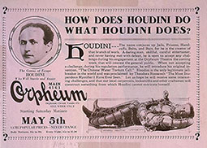
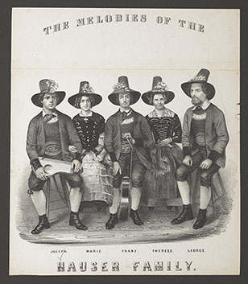

|
Notice: All Library of Congress research centers are closed to the public (including researchers and others with reader identification cards) until further notice to reduce the risk of transmitting COVID-19 coronavirus. All Library-sponsored public programs are also postponed or cancelled until further notice. Online resources and reference services, such as Ask a Librarian, will continue to be available during this time. For more information, see: www.loc.gov/coronavirus. | ||
Fresh Off the Digital Press Healthful sports for young ladies: illustrated by eleven elegant engravings from drawings by J. Dugourc ... accompanied by descriptions. London: Printed for R. Ackermann, Repository of Arts, 101 Strand, by W. Clowes, Northumberland-Court, [1822] Featured Finding Aid McManus-Young Clipping Collection of Materials on Magic Also see the McManus-Young Magic Collection |
Featured Image The Stranger's Gift: a Christmas and New Year's Present Featured Blog Old Copyright Submissions — Hawthorne, Twain, Douglass and Thousands More
|
Location: Hours:
Featured NEW Digital Collection Early Copyright Records Collection 1790-1870  The documents in this collection are the result of the first federal copyright laws in 1790 and 1831 (as amended) and contain the early copyright records and material held by the federal district courts and numerous government offices in Washington, DC.
|
| The unique materials of the Rare Book and Special Collections Division, now totaling over 800,000 items, include books, broadsides, pamphlets, theater playbills, prints, posters, photographs, and medieval and Renaissance manuscripts. At the center is Thomas Jefferson's book collection, which was sold to Congress in 1815. | ||
| The
Library of Congress >> Researchers December 17, 2020 |
Legal | External Link Disclaimer
|
Contact
Us: Ask a Librarian |